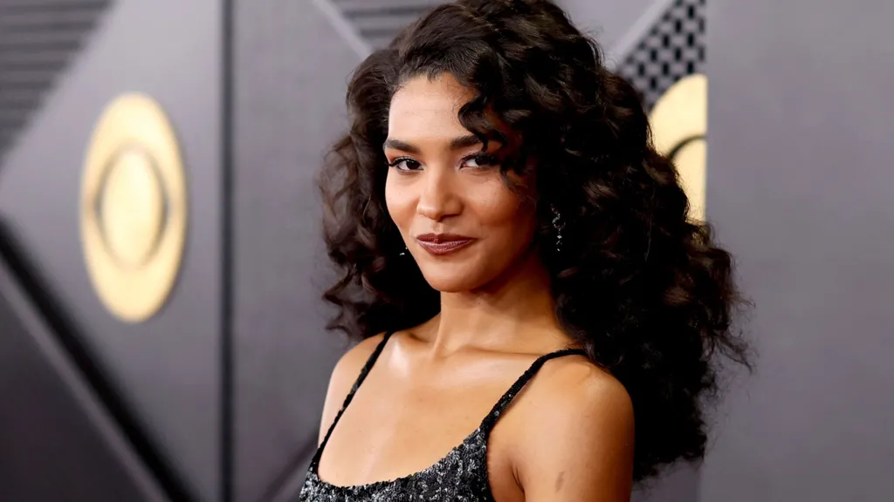

| Home | world | Pakistan | Business | Science | Sports | Technology | Entertainment | Health | Trending | Contact |
|---|

British pop star Olivia Dean has been accused of copying the melody of Bill Withers' soul classic Just The Two of Us in a legal case filed in California.
The complaint centres around Dean's song I've Seen It, taken from her Brit Award-winning 2025 album The Art of Loving.
Just The Two of Us was a hit for Withers in 1981, and the publishers of the late singer's catalogue allege that the two songs "share musical features" that are "so striking" they cannot have arisen by coincidence alone.
The lawsuit names Dean's record label Capitol Records, parent company Universal Music Group and her publishing companies as the defendants. It does not seek damages from the singer herself or her co-writers Bastian Langebæk and Max Wolfgang.
In legal documents seen by the BBC, Mattie Music Group, which looks after Withers' back catalogue, said it hired a musicologist to review the two songs.
He concluded "that the works contain substantial similarities" including the "repeated copying" of the melody from Just The Two of Us, the documents said.
The publishers claim they notified Dean's record label of the potential infringement in August, but the music was not pulled from distribution.
To prove plagiarism, Mattie Music Group would have to prove that Dean and her co-writers had previously heard Withers' original composition.
In the lawsuit, they allege that his song's "extraordinary and sustained" commercial success, including "decades of radio play", would mean the musicians had "reasonable opportunity" to have encountered Just The Two of Us before writing I've Seen It.
The defendants have yet to respond to the lawsuit. The BBC has contacted them, and Dean's representatives, for a comment.
I've Seen It is the closing track of Dean's breakthrough album, which was released in September 2025.
A sweet, acoustic ballad, it discusses the various types of love she's encountered in her life - from high school crushes to the love she has for her family and friends.
Speaking to W Magazine last year, she said the song was written after "I'd had a lot of red wine".
"When I heard it back for the first time, I burst into tears. It felt like the loveliest note to end on. Whether it's within your friends, your family, or just the love that exists in the strangers around you, it's there, and it's inside of you, too."<
It is has been streamed on Spotify about 246 million times, while Just The Two of Us has racked up 948 million plays.
Withers' track was a collaboration with saxophonist Grover Washington, Jr and was originally released under the latter artist’s name.
It went to number two in the US charts in 1981 and earned Withers a Grammy for best R&B song. He died in 2020.
Dean picked up best new artist at this year's Grammys, while The Art of Loving reached number three in the US and number one in the UK, and was named album of the year at the Brit Awards.